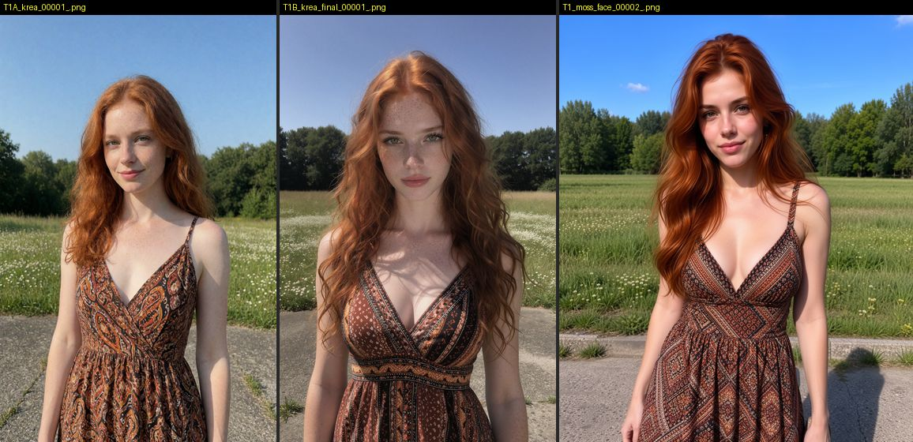
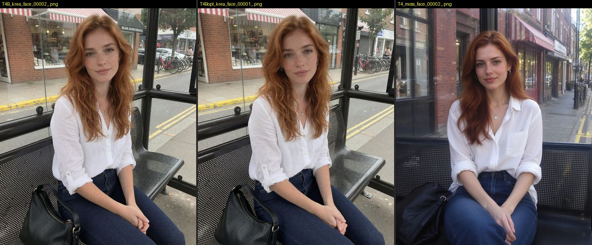
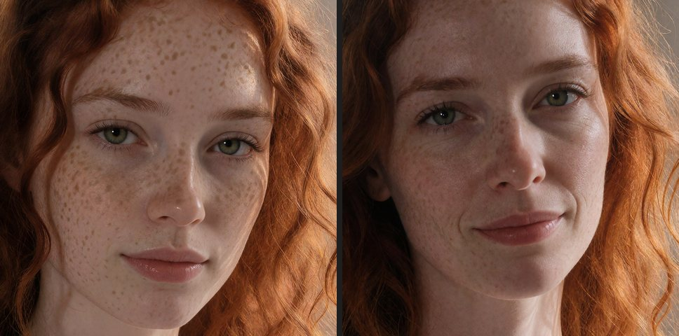
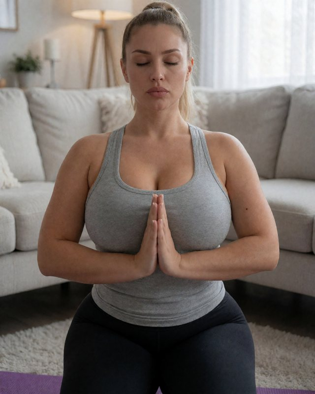
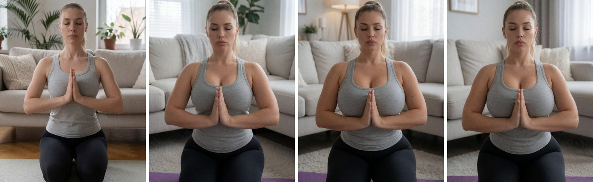

Первый кадр решает больше половины качества видео. Здесь сравнение моделей для фото и приёмы, которые сработали на практике.




01 · 896×1120 → 1344×1680 · 65 с. Слова о фигуре взяты из твоего промпта.
01 и 01b, плюс прозой и тегами. А «slightly chubby body, huge breasts, sagging breasts» срабатывает с первого сида.crisp detailed instagram photograph of masterpiece, best quality, realistic, photorealistic, photo \(medium\), instagram model, fictional 28-year-old adult woman, mature facial features, narrow face, pouty lips, sleek pulled back ponytail, 1girl, slightly chubby body, curvy, thick, blonde hair, huge breasts, sagging breasts, wide hips, big round butt, thick thighs, eyes closed, calm meditation, hands praying in front of her, her breasts rest on top of her forearms. indoors, kneeling, living room, couch, floor, yoga mat, light fitted heather-grey cotton tank top, thick opaque fabric, scoop neckline, cleavage, black athletic leggings, straight on, bokeh, depth of field